It enables the employees to understand about theirs and their family's health status and take curative steps on time in case there are any irregularities. PME data, if structured, can also help the corporates in designing focused health initiatives and provide necessary health services to the employees and their dependents. This goes a long way in corporates saving considerable amount of money in healthcare costs. In RIL, there are currently 73,000 employees eligible for PME but only a fraction of them (16%) actually undergoes the process.
The JHH Program Management team contacted and recruited employees as task participants from across Reliance Industries Limited working from Reliance Corporate Park. The JHH product team then contacted each participant requesting their availability for a face to face session.
Six employees from various Reliance Industries Limited corporates participated in this test. Each test session was divided into three parts,
Each individual session lasted approximately 30 minutes. For each session, four artefacts were collected. Task observations by admins, Participants’ screen recordings while performing the tasks, Participants’ answers to the post task questionnaire, Video recordings of the overall sessions.
Create awareness into healthcare/wellness programs being offered by the employee
Improve the user
experience of the employee journey
Move away from episodic to a continuum of care model
Periodic medical checkup helps improve life expectancy. A good knowledge and understanding of the
prevailing health knowledge, attitude and preventive health behaviour of these traders is essential for
creatingpopulation-specific healthprograms.
A health check up is defined as a thorough study or
examination of the health of an individual . Health check up should start even while the baby is in the womb
to find out congenital diseases and at the time of birth to identify and correct many diseases. Health should
be monitored during childhood and adolescence. Regular checkups are necessary to detect problems like heart
diseases, cancers, diabetes and others.
With this feature, in addition to call and email, employees who have completed the Manage Identity process
will be able to book PME appointments online with the empanelled centres from the Search Tie-up centres
screen.
An employee who has completed the Manage Identity process and plans to get their PME done at a
tie-up centre should be able to
Book the appointment online with any tie-up centre through JioHealth PME
section.
Track the status of their appointment
Get notifications about their appointment
Manage
their appointment booking
JioHealth PME section
MS Teams
WhatsApp
An employee who has done their PME via the non-empanelled process should be able to,
View the upload reports section inside JioHealth PME section
Upload the PME reports through JioHealth
PME section
Upload the reports via MS Teams
Upload the reports via WhatsApp
Employee links their corporate ID with JioHealth account and this unlocks all health benefits that Reliance offers to the employees on JioHealth for them.
JioHealth envisions to become an enabler towards corporates having a healthier work force. Nudging employees to get their PMEs done is a stepping stone towards this vision. To achieve this, we propose to position PME as an offering (a gift) to the employee rather than being just another corporate chore and at the same time, make the process easier and streamlined.
Life expectancy and prosperity have risen in developed and developing countries over the past 50 years and are expected to continue to rise . By 2020, the life expectancy in the developing world is expected to pass the 70 years barrier, causing the world's life expectancy to continue to climb. Health was defined by the World Health Organization as the state of physical,mental and social well being, not merely the absence of disease or infirmity .
Most adults need a thorough medical examination of which the frequency increases if there is a health problem
that requires continuing care. The interval between checkups depends on age. Traders usually fall between the
ages of 18 and 60 years and are expected to benefit maximally from periodic medical checkups because they are
regularly under stress. Regular checkups save lives even when there is no specific
problem, since the
absence of disagreeable symptoms does not necessarily guarantee that one is in good health. The main goals of
a periodic medical examination are to diagnose treatable asymptomatic diseases . Some studies have also shown
decreased
rates of invasive cancers and decreased mortality in people who undergo regular medical
checkup.
Health check-up is in highest demand & the Maximum Revenue product
Health check-ups need to be
promoted as a preventive step to reduce health risk and potential expenditure
For all products (health
check-ups, EW, consultation), billing needs to be done on usage basis, especially for large organizations
Emotional
Wellness and Consultation products should be treated as employee benefits to improve user retention
Condition
management should follow a B2B2C strategy by being positioned as an employee paid add-on
B2C offerings
like diagnostics, self-health checks, etc. should be present on the platform for the use of employees and
their dependents and to normalize provider demand
A periodic health check up is important for traders because it leads to promotion of health and reduction in
morbidity and mortality and the consequent reduction
in man hours and economic drain caused by diseases.
The health of this group should be maintained to help in sustenance of the national economy. It is suspected
that extremely long working hours increase the risk of sudden death from too much occupational stress . A
case-control study carried out in Japan shows a U shaped relationship between mean monthly working hours and
the risk of acutemyocardial infarction , hence a need for improved level of medical checkup among the working
population. Also, providing preventive health services would decrease the demand by the elderly and result in
a more effective use of health resources.
On various JioHealth application – Mobile, web, teams, WhatsApp, employees can avail of all the Health services. This will be a special view on JioHealth for only for Reliance employees
Create a constant and long-term engagement by offering various tools such as:
PME
Doctor
follow-ups
Health Patri
Activities
ABHA linked health locker
Self checkups
Health and wellness are a top priority for the employers in an increasingly competitive talent market to attract and retain top talent
Organizations are increasingly ramping up employee wellness programs for better productivity and engagement in the workplace. Here are a few numbers based on a recent survey of 100 corporates in India
say Managing my health is
a top priority in my life".
say "Employers should
actively encourage their
employees to live healthy
lifestyles".
say that their top priority is to "Identify and effectively manage population health risks
and
chronic conditions across the workforce".
Say that a top priority is to "Identify and manage stress and benavioural health issues across the workforce.

As per the Redseer report currently about 72 million employees of corporate India are covered under employee wellness programs. While all the corporate work force is a potential user, this base of 72 million is a low hanging fruit.


 


Periodic Medical Examination (PME) which is offered complimentary by corporates for its employees and their families is one of the key offerings of the corporate healthcare services.